Regression comparison
Download resultsAggregation weights
\widehat y(x)=y_{\rm mean}+y_{\rm std}\sum_{h=1}^{H}\beta_h\mu_h(x)Coefficients can be negative and need not sum to one. Intervals describe coefficient uncertainty; the dashed reference is DE’s fixed 1/H weight.
BDKN

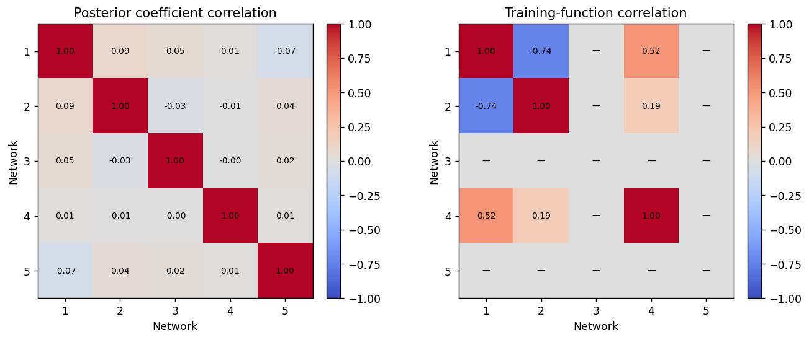
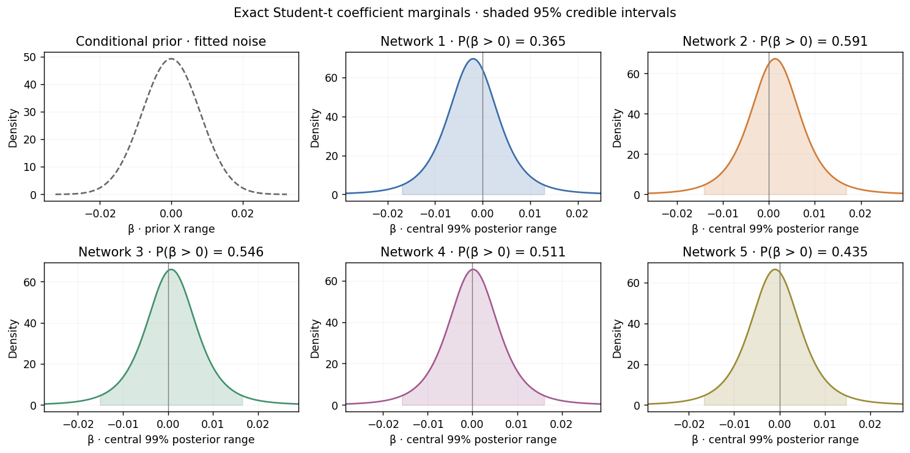

Each density panel uses its own X range for readability; coefficient intervals above share a common axis. Prior reference conditions on fitted noise. Contribution shares use held-out inputs; test targets are used only for scoring.
| Network | β mean | 95% low | 95% high | P(β > 0) | Contribution share | Test RMSE | Test NLL |
|---|---|---|---|---|---|---|---|
| 1 | -0.00199 | -0.01695 | 0.01296 | 0.36495 | 0.53337 | 0.92803 | 1.37538 |
| 2 | 0.00137 | -0.01410 | 0.01683 | 0.59079 | 0.24810 | 0.59254 | 1.03148 |
| 3 | 0.00071 | -0.01508 | 0.01649 | 0.54640 | 0.07261 | 0.35267 | 0.93248 |
| 4 | 0.00016 | -0.01575 | 0.01607 | 0.51074 | 0.00540 | 0.19234 | 2.85656 |
| 5 | -0.00098 | -0.01664 | 0.01467 | 0.43513 | 0.14052 | 0.52972 | 1.05735 |
Functional repulsion · BDKN
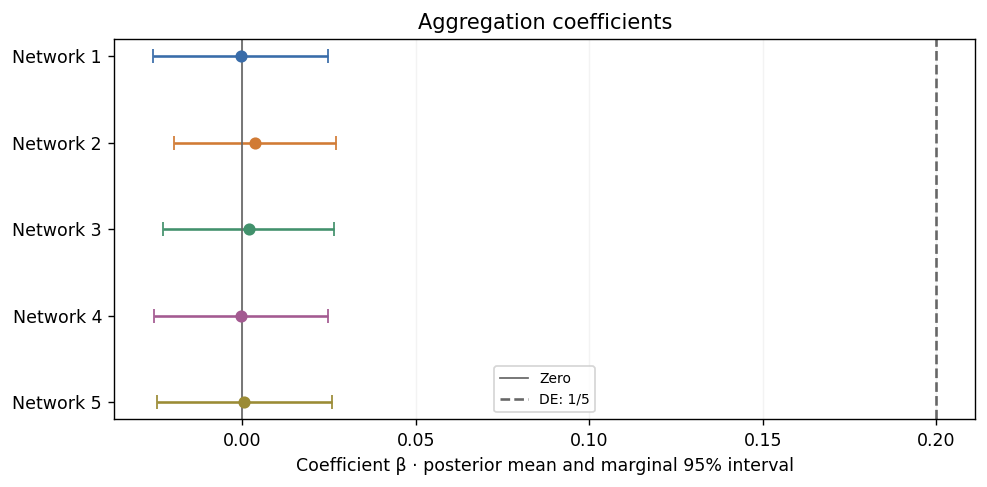
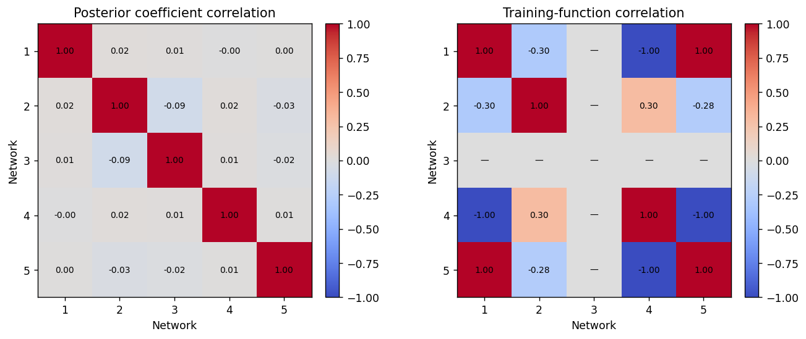
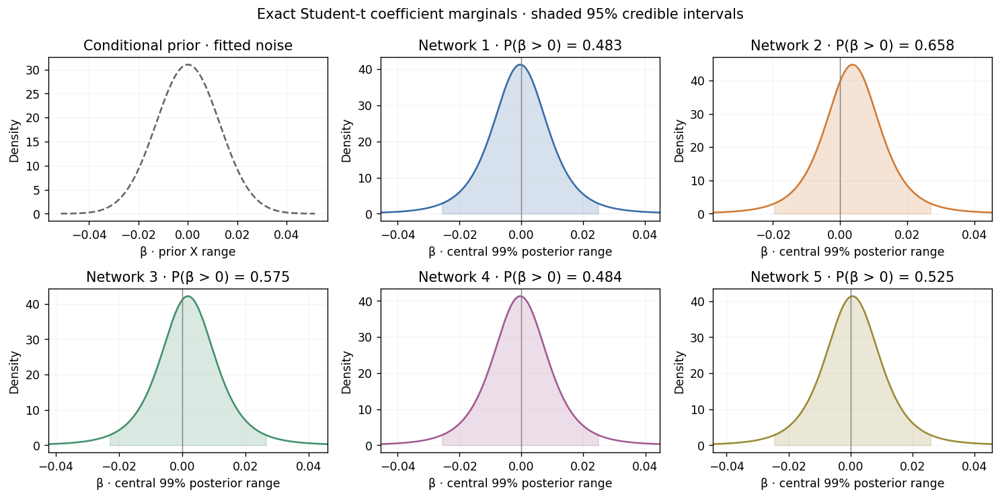
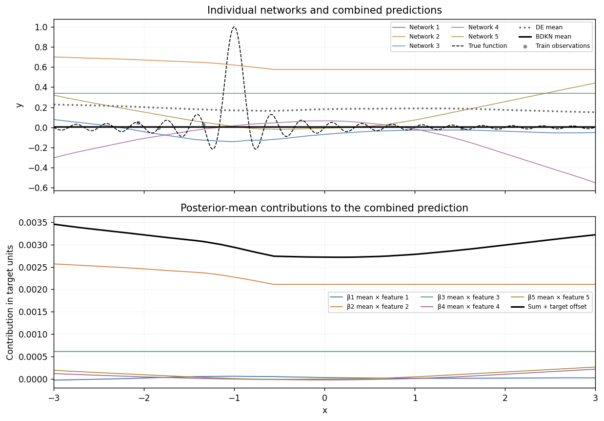
Each density panel uses its own X range for readability; coefficient intervals above share a common axis. Prior reference conditions on fitted noise. Contribution shares use held-out inputs; test targets are used only for scoring.
| Network | β mean | 95% low | 95% high | P(β > 0) | Contribution share | Test RMSE | Test NLL |
|---|---|---|---|---|---|---|---|
| 1 | -0.00040 | -0.02562 | 0.02481 | 0.48333 | 0.00834 | 0.21109 | -0.46062 |
| 2 | 0.00367 | -0.01956 | 0.02689 | 0.65815 | 0.74048 | 0.60185 | 1.04149 |
| 3 | 0.00181 | -0.02289 | 0.02650 | 0.57546 | 0.20330 | 0.35268 | 0.93248 |
| 4 | -0.00039 | -0.02558 | 0.02481 | 0.48392 | 0.01909 | 0.26705 | 3.66721 |
| 5 | 0.00059 | -0.02456 | 0.02575 | 0.52458 | 0.02879 | 0.26005 | 0.25167 |
Weight repulsion · BDKN

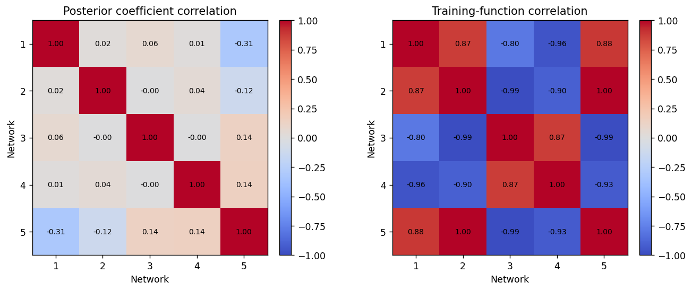


Each density panel uses its own X range for readability; coefficient intervals above share a common axis. Prior reference conditions on fitted noise. Contribution shares use held-out inputs; test targets are used only for scoring.
| Network | β mean | 95% low | 95% high | P(β > 0) | Contribution share | Test RMSE | Test NLL |
|---|---|---|---|---|---|---|---|
| 1 | -0.00216 | -0.02452 | 0.02021 | 0.40114 | 0.13321 | 2.01479 | 6.40576 |
| 2 | -0.00124 | -0.02467 | 0.02220 | 0.44535 | 0.07683 | 2.94632 | 1.52910 |
| 3 | 0.00098 | -0.02279 | 0.02475 | 0.54294 | 0.04374 | 2.97396 | 7878.01744 |
| 4 | 0.00262 | -0.02089 | 0.02612 | 0.61365 | 0.10970 | 2.27535 | 187171.92015 |
| 5 | -0.00671 | -0.02344 | 0.01001 | 0.16382 | 0.63653 | 3.77158 | 2.20493 |
First-order repulsion · BDKN
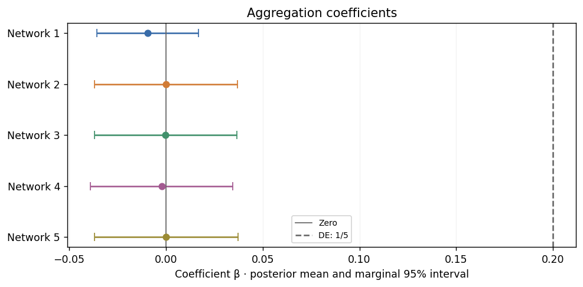
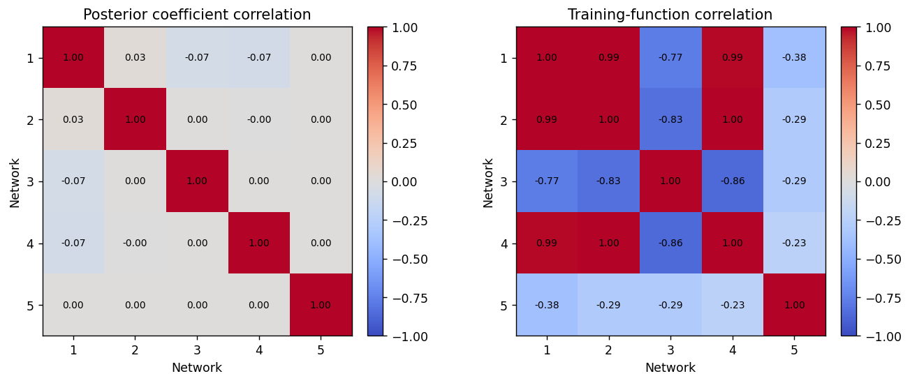
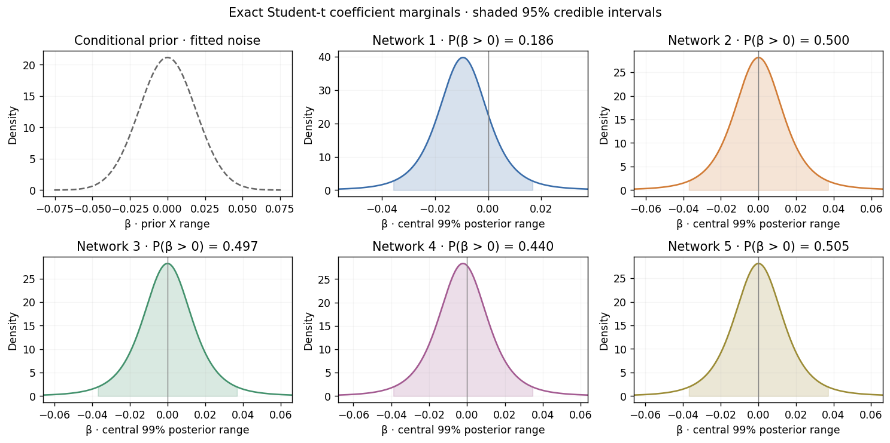
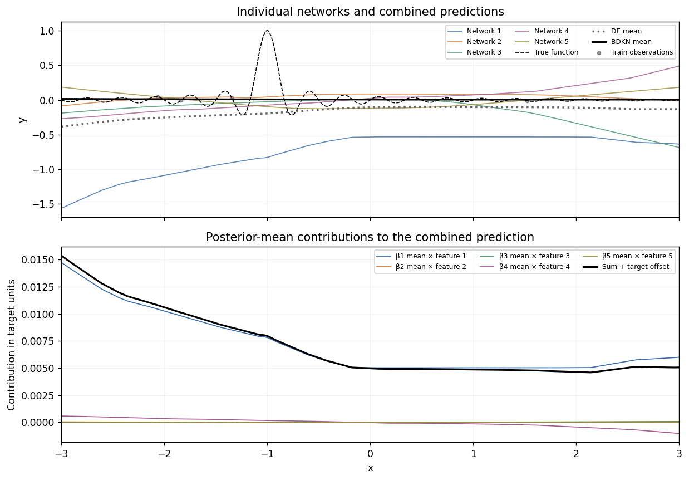
Each density panel uses its own X range for readability; coefficient intervals above share a common axis. Prior reference conditions on fitted noise. Contribution shares use held-out inputs; test targets are used only for scoring.
| Network | β mean | 95% low | 95% high | P(β > 0) | Contribution share | Test RMSE | Test NLL |
|---|---|---|---|---|---|---|---|
| 1 | -0.00944 | -0.03560 | 0.01671 | 0.18640 | 0.95363 | 0.84140 | 1.24786 |
| 2 | -0.00000 | -0.03698 | 0.03698 | 0.49999 | 0.00000 | 0.17785 | 0.62332 |
| 3 | -0.00010 | -0.03693 | 0.03673 | 0.49722 | 0.00212 | 0.30030 | 5173.86419 |
| 4 | -0.00213 | -0.03886 | 0.03460 | 0.43993 | 0.04237 | 0.26129 | 9.28900 |
| 5 | 0.00016 | -0.03682 | 0.03714 | 0.50452 | 0.00187 | 0.21501 | 7.09876 |